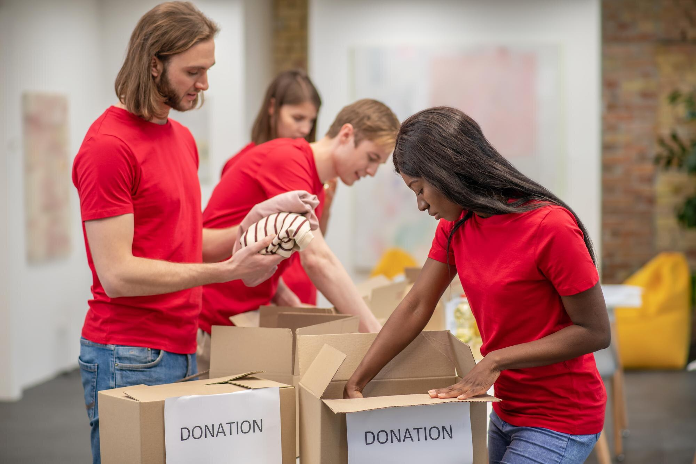
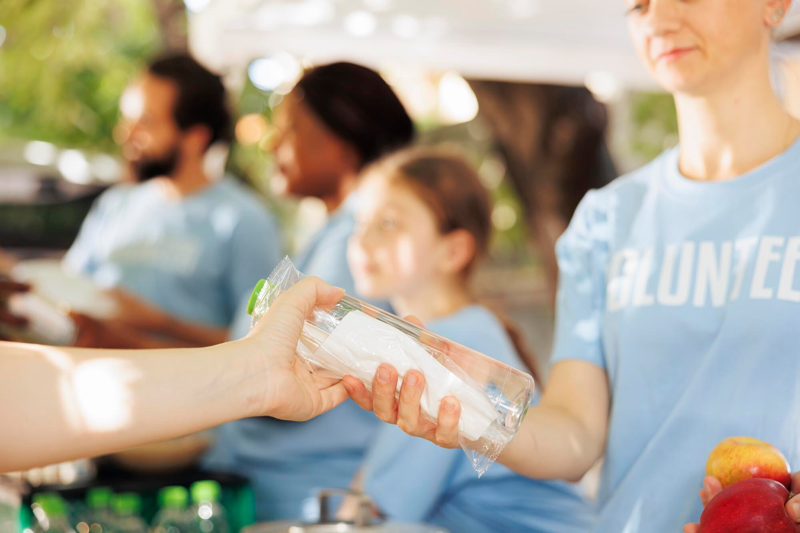
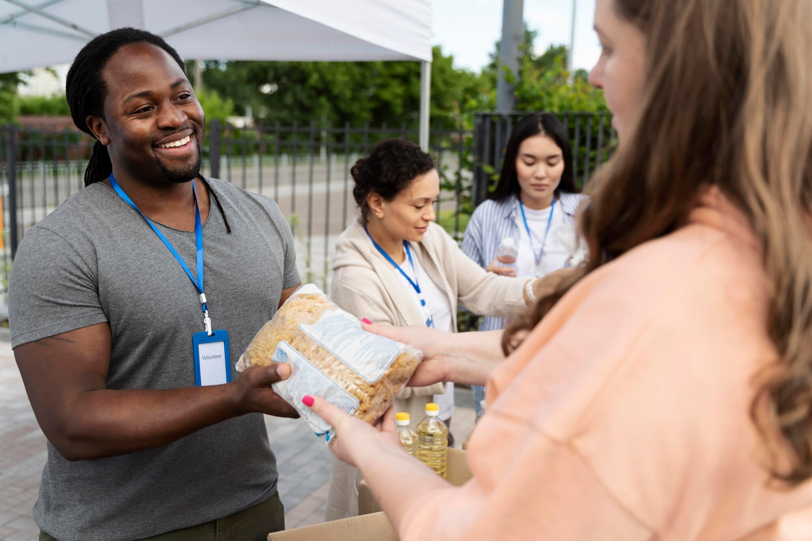
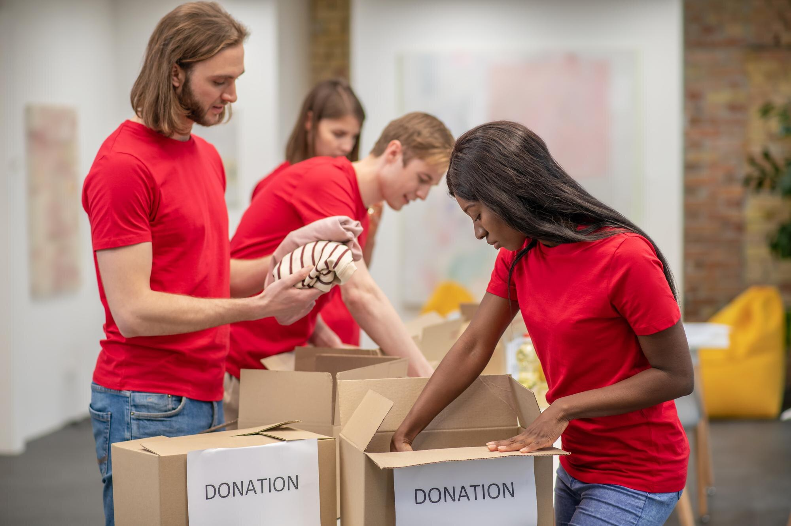
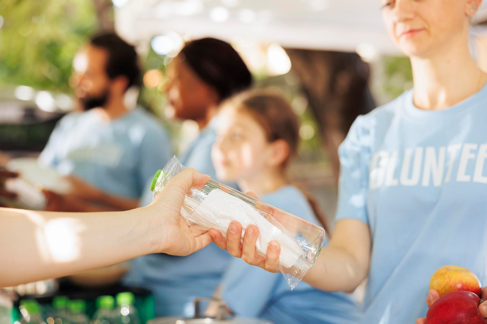
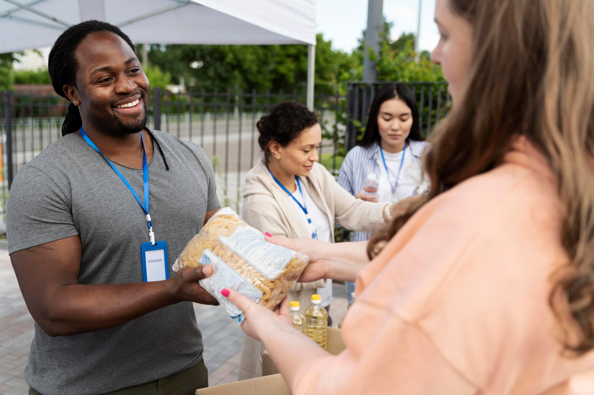

We Are Doctors Charity
Empowering Doctors, Transforming Lives: Bridging The Healthcare Gap. We Connect Skilled Healthcare Workers With Communities In Need, Making A Lasting Impact.
Empowering Doctors, Transforming Lives: Bridging The Healthcare Gap. We Connect Skilled Healthcare Workers With Communities In Need, Making A Lasting Impact.
 





Established In 2008 By A Team Of Visionary Doctors, Doctors Charity Is A Multi-Service Non-Profit Based In New York Helping People Worldwide. Currently We Operate In The U.S And Africa To Deliver Medical Care And Equipment, Health And Education, Mindfulness, And Investment In Agriculture In Communities That Need It The Most. We Have Six Major Projects Reaching Hundreds Of People In Need.
Our ultimate aim is to build a legacy of service, We envision a day when medical professionals the world over will set a day aside out of their busy schedule every month to volunteer their time to providing free and qualitative healthcare in poor communities. We are about service, service to the people and service to the community.
We desire a world in which medical professionals and other healthcare providers would make service to their people, their communities and neighboring communities an integral part of their monthly schedule.
We believe that by coming together, we can build for the world a big global community of medical care where we are all responsible to the wellbeing and care of each other and a world where no one goes bankrupt as a result of falling ill or dies from lack of care due to poverty.
Every Person Deserves Access To Life Improving And Lifesaving Information, Medical Care, And Economic Opportunities To Support Their Families. We Are Dedicated To Providing Medical Care And Resources To The Economically Disadvantaged. Our Mission Is To Deploy Effective And Coordinated Efforts To Ensure People Gain Access To Qualitative Medical Care, And Economic Resources.
DOCTORS CHARITY Partners For Projects To Assist Medical Professionals To Deliver Medical Care, Equipment, Supplies And Medical Training In The U.S. And The Developing World. We Invite Doctors And Other Professionals Interested In Joining Youth Communities To Volunteer On Any Number Of Our Projects. And/Or Donate Funds To Assist In The Deployment Of These Key Projects. There Are So Many Ways To Give Back. We Have Focused On These Core Areas:
Service: Delivering Pro Bono Medical Services Via Home Visits And Medical Missions Abroad. Resource Distribution: Providing Medical Equipment To Communities That Need It. Financing: Rallying Funds To Support Microfinancing And Farming Initiatives.
You Can Also Partner With Us By Donating To Any Of Our Projects Today. You Can Also Donate Medical Equipment Targeted A Poorly Served Communities In West Africa.
Donate Now